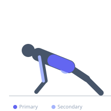
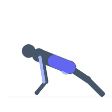

Exercise guide / Plank Shoulder Taps
Plank Shoulder Taps
Plank shoulder taps are an anti-rotation core stability exercise performed from a high plank position. One hand at a time lifts from the floor to tap the opposite shoulder while the core resists the rotational and lateral shift that the movement creates. This demands simultaneous core bracing, shoulder stability, and hip anti-rotation, making it a highly effective functional rehabilitation drill for the core, hips, and shoulder girdle.
Primary muscles
transverse abdominis
internal oblique
external oblique
Secondary muscles
gluteus medius
triceps long head
Stabilizers
erector spinae
deltoid anterior
Equipment
No Equipment (Bodyweight)


Starting position
- Begin in a high plank (push-up starting position) with hands directly under shoulders and feet hip-width apart. The body should form a rigid straight line from heels to head.
Setup
- Wider foot stance makes the exercise easier and is a good starting modification. Narrower stance increases the anti-rotation challenge.
Steps
- Step 1: Establish a rigid plank. Brace the core and squeeze the glutes.
- Step 2: Slowly lift the right hand from the floor and tap the left shoulder, then return the right hand to the floor.
- Step 3: Immediately lift the left hand and tap the right shoulder, then return.
- Step 4: One tap per side equals one repetition. Continue alternating while maintaining a level, non-rotating body.
Coaching cues
- Squeeze the glutes to prevent hip drop during the tap
- Move only the arm — nothing else should shift when the hand lifts
- Wider feet = easier; narrow feet = harder. Choose based on your current level
Breathing
- Breathe continuously — do not hold your breath. Exhale as you lift the hand.
Range of motion
- The tap itself is a small movement. The challenge is in keeping everything else completely still.
Tempo
- 2s lift and tap, 1s hold on shoulder, 2s return. Slow and controlled.
Common mistakes
- Allowing the hips to rock side to side during the tap — this is the main error to correct
- Rushing through the movement — slow taps engage the stabilizers far more effectively
- Placing feet too close together, which greatly increases the rotational challenge beyond the user's capacity
Safety
- If the lower back sags during the exercise, perform the drill from the knees first to build foundational strength
- Avoid if wrist pain is present — use fist plank position as a modification
Training
- endurance: 10–20 reps
- strength: 6–12 reps
- endurance: 2–3 sets
- strength: 2–3 sets
- Rest: {'endurance': 45, 'strength': 60}